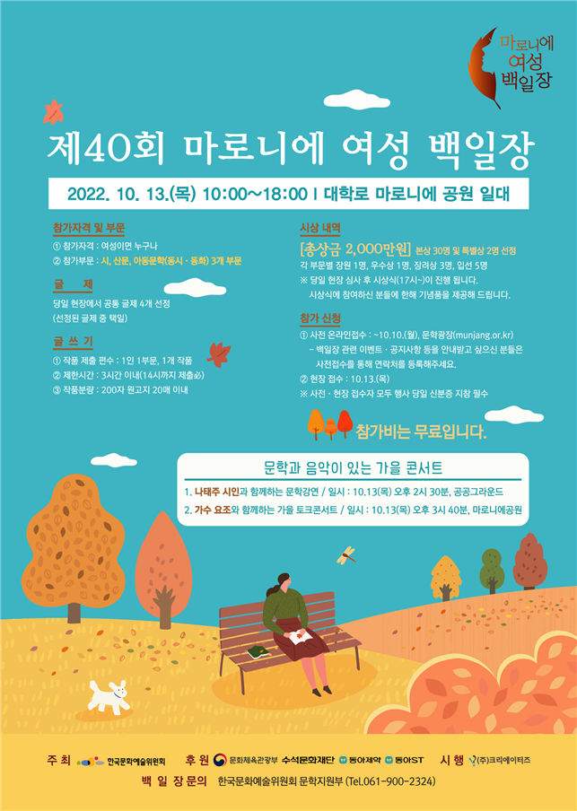

문학주간 2022 둘, 사이 개막행사
- 담당부서문학지원부
- 작성일2022-09-17
- 좋아요2231
- 조회수21
문학주간 2022 둘, 사이 개막행사

- 일정2022년 11월 7일(월) 16:00
- 장소공공그라운드 파랑새극장
- 출연진사회 : 오은 시인
개막선언 : 박종관 한국문화예술위원회 위원장
개막토크 : 오은 시인, 정지아 소설가 - 주요내용1. 문학주간 2022 둘, 사이 홍보 영상 소개
2. 개막선언
3. 축하 인사 (예정)
4. 문학주간 2022 프로그램 소개
5. 개막토크